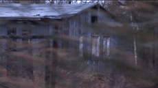

THE HALF MOON FILES
Philip Scheffner | Deutschland 2007 | 87 Min.
Format: BetaSP
Material: MiniDV
Originalsprache: Deutsch, Englisch, Hindi, Punjabi, Gurkha
Drehbuch: Philip Scheffner
Kamera: Philip Scheffner, Astrid Marschall
Schnitt: Philip Scheffner
Ton: Philip Scheffner
Produktion: Pong, Berlin
Verleih: Freunde der Deutschen Kinemathek, Berlin
www.halfmoonfiles.de
Public Libraries Prize, FID Marseille 2007
„Es war einmal ein Mann. Er geriet in den europäischen Krieg. Deutschland nahm diesen Mann gefangen. Er möchte nach Indien zurückkehren. Wenn Gott gnädig ist, wird er bald Frieden machen. Dann wird dieser Mann von hier fortgehen.“
Knisternd verklingen die Worte von Mall Singh, gesprochen in einen Phonographentrichter am 11. Dezember 1916 im „Halbmondlager“, dem Kriegsgefangenenlager der Stadt Wünsdorf bei Berlin. Neunzig Jahre später ist Mall Singh eine Nummer auf einer alten Schellackplatte in einem Archiv, eine unter Hunderten von Stimmen von Kolonialsoldaten des Ersten Weltkriegs. Philip Scheffner folgt diesen Stimmen an den Ort ihrer Aufnahme und recherchiert die Verflechtung von Politik, Kolonialismus, Wissenschaft und Medien.
Philip Scheffner, geb. 1966 in Homburg/Saar. Lebt seit 1986 in Berlin, wo er als Filmemacher, Video und Sound-Künstler arbeitet. Bis 1999 war er Mitglied der Berliner Autorengruppe und Produktionsfirma ‚dogfilm’. 2001 gründete er zusammen mit Merle Kröger die Medien-Plattform und Produktionsfirma Pong und arbeitet seitdem verstärkt im Bereich experimentelle Musik und Klangkunst.
Filme (Auswahl): Juristische Körper (zus. mit Jörg Heitmann) 1995 | Mit fremder Hilfe (zus. mit Merle Kröger und Ed van Megen 1998/99 | Scattered Frequencies (zus. mit Micz Flor) 2002 | a/c. ES Express (zus. mit Micz Flor und Merle Kröger) 2003 | India in Mind (zus. mit Merle Kröger; Videoinstallation) 2006 | The Halfmoon Files 2007
zurück
|